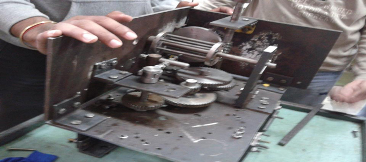
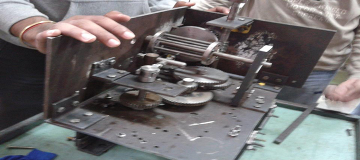

M.Tech. Thesis
Spatial prediction for landslides using machine learning models
1) Find the best Machine learning technique in Python (Decision tree, Random forest, Logical regression, SVM and ANN) for spatial prediction of an event in wide area like landslides in Nainital, India.
2) Understand why conventional predictors fail to produce satisfactory results.
3)The implementation of Graphical User Interface (GUI) enables to investigate the significance of various models using validation statistics.
4) Investigations have revealed that major factors affecting landslide risk prediction include slope, aspect, NDVI value and distance from road, river and other landslides.
5) Random forest and SVM learning method give satisfactory result.
I can't show the code due to institute constraint so if you want to know more discuss with me in chat.
View Project
Research Project
Project one
Target Detection with Hyperspectral Imagery
1) See the development, analysis, and application of sub-pixel target detection algorithms in hyperspectral imaging data.
2) Library generation, data acquisition, and detection using statistical, physical, or heuristic approach.
3) Results were shown from hyperspectral imaging data from Hyperion sensors of Delhi (Man- Made) and Himalayan region (Natural) and Matlab GUI to extract the spectral information of the materials for comparison.
If you want to know more discuss with me in chat
View Project
Github Code
Project two
Object-based image analysis (OBIA) of remote sensing data
1) Looked into the development and its implications, showing various methods and models.
2) Discussed several drawbacks of prevailing per-pixel methods when applied to remote sensing data.
3) Considered some applications which are based on it such as habitat fragmentation, intelligent image enhancement, etc.
4) Used commercial tool - eCognition® software (Definiens, 2005) to classify and analyse IIT Kanpur Image data.
If you want to know more discuss with me in chat
View Project
Project three
CSIRO's Zebedee technology on GPS less laser scanning
1) Demonstrated development, analysis, and application of Zebedee technology of 3D laser scanning by different configurations of its general design
2) calibration, surface extraction, error removal, 3D color visualization etc.
3) Drawback and future scope of these technologies are highlighted using the case study in the field of police mapping and cultural heritage.
If you want to know more discuss with me in chat
View Project
Project four
Study of celestial objects with radio astronomy
1) Described radio astronomy with new discipline of Astro-informatics and its advantages by going through various discoveries.
2) Reviewed various techniques which are used in it like Radio interferometry and difficulties in it.
3) Overviewed radio fundamentals, antennas, radiometers, history of radio astronomy and how data is calibrated.
4) Covered new techniques like computational radio astronomy and studied implementation (e.g. Square Kilometer Array) by various organizations.
If you want to know more discuss with me in chat
View Project
Project five
Geoid Model with feature mapping
1) After field reconnaissance, with data dictionary and JUNO uncorrected GPS mode and Integrated SBAS mode data are collected.
2) Studied methodology available in the literature to calculate effect of satellite orbit perturbation in GPS coordinates.
3) Analyzed data obtained through the GPS receiver in the RINEX file format in Trimble Business Center (TBC) to evaluate GPS co-ordinates of ground point.
4) Geoid model was developed and tested using integrated GNSS and leveling data by interpolation technique to estimate the spatial distribution of geoidal undulation of the area.
If you want to know more discuss with me in chat
View Project
Project six
Total least squares
1) Formulated TLS and explained how it is different from Ordinary Least Squares (ODE).
2) Described various methods of TLS for GPS, Image restoration, information retrieval and astronomy.
3) Developed an interactive Graphical User Interface (GUI) to illustrate the computations and results.
4) Performed error analysis using basic law of propagation of co-variances to estimate the confidence level of the results.
If you want to know more discuss with me in chat
View Project
Github Code
Project seven
REMOTELY SENSED DATA ANALYSIS
Read GeoTIFF files using matlab -
GeoTIFFis a geo-spatially tagged TIFF image file format, allowing images to be georeferenced
onto the Earth's surface.
Today with fast growing world and natural causes, accurate change detection of Earth’s surface features is important to promote better decision making.
As changing can take place from bare land to agriculture land, from bare to city or city to bare and all, so various change detection technique is required.
The merit of this work lies in its simplicity and ease of usage with various change detection techniques at one place.
If you want to know more discuss with me in chat or check code on Github.
View Project
Github Code
Project eight
Performance of geo-synthetic reinforced soil barrier
1) Chose three different site conditions having different type of geo-synthetic reinforcement as soil barriers.
2) Studied its geo-synthetic reinforcement properties and concluded that it can be used in construction of slopes as it is better in stability and settlement considering that some geo-synthetic reinforcement interface combination can be critical.
If you want to know more discuss with me in chat
View Project
Key Projects
Project one
Network Analysis of Research Community
1) Worked on IIT Kanpur professor’s web pages and research paper search engines to collect their recent research outputs.
2) Tools used to be network analysis, computational resources and social media analytics by the Python program for noise generation, file cleaning and data comparison through sliding window technique.
3) Can become an integral part in collaborations of academia and research in different fields which is particularly important in the present world because of the very nature of research of today required by providing important data to the funding organizations to help build a multidisciplinary culture of research in the country.
If you want to know more discuss with me in chat.
View Project

Project two
Winter Camp (Survey and Geology camp)
1) Planned and executed a real life mapping problem of Aurobindo ashram at Nainital, challenge was sloping terrain for that GPS data is adjusted , control was established and multi-date data was aggregated and converted into final map using ArcGIS.2) Skilled in performing database queries in Microsoft Excel and spatial queries in ArcMap by which completed road mapping from ashram gate to Barapatthar (main road).
3) Observed geology of Nainital area by identified rock type and associated with specific stratigraphic units by Structural Mapping.
If you want to know more discuss with me in chat.
View Project
Project Three
2-D projection map
Developed a 2-D projection map (Group project: Geo-informatics)1) Involved in a team project to conduct a detailed survey of a part of our college campus.
2) Learned about new instruments like GPS, Total Station and Auto level, survey techniques and softwares by making a map of the area with the observed field points using ArcGIS suite.
3) Transformed map (which is being prepared in local coordinate system) to global coordinate system using affine transformation.
If you want to know more discuss with me in chat.
View Project
 

Project four
Manufacturing
Drilling MachineDesigned working model of a Drilling Machine (Group project: Manufacturing Processes)
1) To show how a mechanical drilling would work using gear mechanism using Conventional Machining processes – lathe machine, tapping, drilling, milling, reaming etc.
2) Analyzed work load, identified inefficiencies and modified it resulted in production.
Moon Rover Vehicle
Constructed model of a Moon Rover Vehicle (Group project: Manufacturing Processes) To show vehicle made by sheet, welding, casting etc. ensuring accurate scaling and measurements, removed non value tasks to accomplished design in limited time. If you want to know more discuss with me in chat.
Drilling Machine Report
Project five
Video making
Different types of Video making Projects was done in Art of Video Making Course.Third video is made to promote the tremor competition.
Click on link to see it.
Horror Changes in JEE Tremor
Other Things
Activities and Participation
1) Part of Alumni Contact Program (ACP) in summer 2012 to increase involvement of alumni with Institute and managed alumni problems and complaints.2) Secured 1st position in intra college Volleyball match (CPA Intramural 2011-2012).
3) Spearheaded a team of three to secure 3rd position among 15 teams in Star hunt in Takneek.
4) Engaged in dance in first year, performed in departmental fresher and dance extravaganza.
5) Qualified prelim of programming club challenge Blackbox in 2011.
6) Managed personality contest , synchronized activities of team of 10 to drive over 100 users to most sought after title of Mr. and Ms. Antaragini.
7) Representative of Society of Civil Engineers - Renewing students and faculties by organizing lecture series by alumni and company officials and assisted events like civil engineering fresher and industrial trips.
8) Handled national earthquake design challenge, guided students regarding design and promoted event through various marketing activities leading to an increase in participation.
9) Professional Assistant for Geographical Information System course - Responsible for conducting labs and tutoring undergraduate in the course work of Geographical Information Systems
If you want to know more discuss with me in chat.
Courses Done
FUNDAMENTAL OF COMPUTING (ESC101A)Linear Algebra and Differential Equation(MTH101A and MTH102A)
PARTIAL DIFFERENTIAL EQUATIONS (MSO203B)
PROBABILITY AND STATISTICS (MSO201A)
COMPUTATIONAL METHODS IN ENGINEERING (ESO208A)
SOCIAL COGNITION (PSY468A)
MARXISM, GANDHI AND EXISTENTIALISM (PHI442A)
INTRODUCTION TO ECONOMICS (ECO101)
FINANCIAL ENGINEERING (IME611A)
INTRODUCTION TO THE ART OF VIDEO MAKING (ART105A)
MECHANICS OF SOLIDS (ESO202A)
CIVIL ENGINEERING MATERIALS (CE242A)
STRUCTURAL ANALYSIS (CE272A)
SOIL MECHANICS (CE351A)
DESIGN OF STEEL STRUCTURES (CE371A)
FOUNDATION DESIGN (CE352A)
REINFORCED CEMENT CONCRETE DESIGN (CE372A)
ENGINEERING GRAPHICS (TA101A)
GEOINFORMATICS (CE331A)
SURVEY AND GEOLOGY CAMP (CE332A)
TRANSPORTATION ENGINEERING (CE382A)
ENGINEERING GEOSCIENCES (CE321A)
MANUFACTURING PROCESSES (TA202A)
ENVIRONMENTAL QUALITY AND POLLUTION (CE211A)
ENGINEERING HYDRAULICS (CE262A)
HYDRAULIC AND HYDROLOGIC DESIGN (CE462A)
CONSTRUCTION MANAGEMENT (CE441A)
CIVIL ENGINEERING SYSTEMS ANALYSIS (CE442A)
APPLICATION OF GEOTECHNICAL ENGINEERING (CE451A)
INTRODUCTION TO REMOTE SENSING (CE671A)
GEOSPATIAL DATA PROCESSING (CE677A)
INTRODUCTION TO GEODESY (CE678A)
SOCIAL MEDIA ANALYTICS (CE653A)
PHILOSOPHICAL AESTHETICS(CE450A)
MACHINE PROCESSING OF REMOTELY SENSED DATA(CE672A)
GLOBAL NAVIGATION SATELLITE SYSTEMS(GNSS) (CE674A)
MACHINE PROCESSING OF REMOTELY SENSED DATA (CE672A)
If you want to know more discuss with me in chat.
* doing